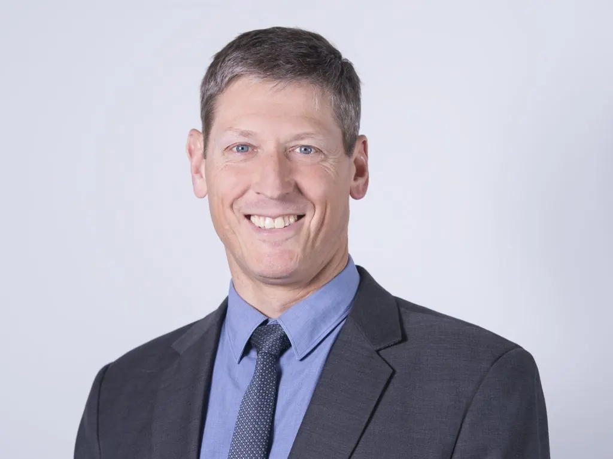
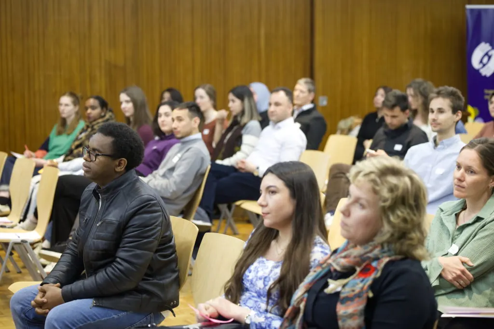
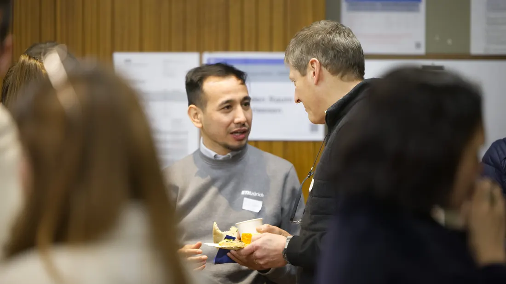
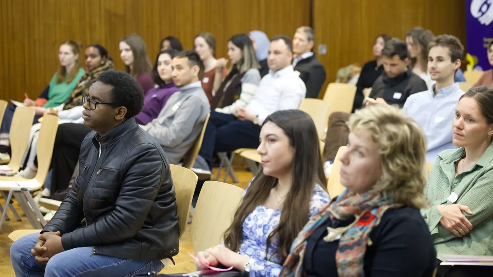

Das Mentoring-Programm ist anspruchsvoll, aber sehr bereichernd
The mentoring programme is challenging but very enriching
Le programme de mentorat est exigeant, mais très enrichissant
SEET ist die einzige Organisation in der Schweiz, die Geflüchtete unabhängig von den Universitäten selbst beim Zugang zur Hochschulbildung unterstützt. Das Studienförderungs-Programm von SEET vernetzt Geflüchtete mit Mentorinnen und Mentoren, die sie wertvoll dabei unterstützen, sich im Schweizer Bildungssystem zurechtzufinden.
Wir haben mit Daniel Halter gesprochen, um mehr über seine persönliche Motivation zu erfahren, SEET-Mentor zu werden. Er hat seine Erfahrungen als Mentor mit uns geteilt und erklärt, was er jemandem raten würde, der in seine Fussstapfen treten möchte.

Daniel, erzählen Sie uns etwas über Ihren persönlichen Hintergrund und was Sie derzeit tun. Nach meinem Studium der Zellbiologie an der ETH Zürich und der Promotion in Molekularbiologie in Cambridge in Grossbritannien arbeitete ich mehrere Jahre in der Forschung, bevor ich meine Leidenschaft für Bildung entdeckte.
Ich arbeitete als Lehrer in der Schweiz und im Ausland und war in verschiedenen Führungspositionen im Hochschulbereich tätig, unter anderem an der Universität St. Gallen, der ETH Zürich und der Fachhochschule Nordwestschweiz. Vor einigen Jahren bin ich in den Ruhestand getreten und arbeite heute Teilzeit als Senior Consultant bei einer Managementberatung in Bern sowie als Leadership-Coach. Kürzlich habe ich mir einen Kindheitstraum erfüllt und den Ausweis für Berufs-Lastwagenfahrer erworben.
Wann und wo sind Sie erstmals auf SEET und das Studienförderungs-Programm aufmerksam geworden? Bei einem Treffen vor ein paar Jahren lernte ich Alessandra Iacopino kennen, ein ehemaliges Vorstandsmitglied von SEET. Sie sprach sehr positiv über SEET und ermutigte mich, mich als Mentor zu bewerben. Ein Gespräch mit der Präsidentin Nora Diethelm überzeugte mich schliesslich, SEET als Mentor beizutreten.

Welche Faktoren haben Sie dazu inspiriert, sich als Mentor zu bewerben? SEET unterstützt hochqualifizierte Geflüchtete dabei, einen Weg und eine Universität zu finden, um ihre Ausbildung zu beginnen oder fortzusetzen.
Durch meine vielfältigen Tätigkeiten im Bildungsbereich – vom Kindergarten bis zur Universität, in der Schweiz und im Ausland – bin ich der Meinung, dass ich gute Kenntnisse des Schweizer Bildungssystemes habe und bei der Navigation dieses Prozesses unterstützen kann.
Zudem empfinde ich es als Verschwendung von Talent für die Gesellschaft, wenn diese jungen Menschen ihre Fähigkeiten und Arbeitskraft nicht voll einbringen dürfen. Als Pädagoge und als Vater habe ich erlebt, was Bildung bewirken kann, wenn es darum geht, neue Perspektiven zu eröffnen und Träume von einem selbstständigen und erfüllten Leben zu verwirklichen. Einen kleinen persönlichen Beitrag zu leisten, um Menschen zu unterstützen, die aufgrund dramatischer Umstände ihr Leben neu aufbauen müssen, erscheint mir daher als sehr sinnvolles Engagement.
Erzählen Sie uns von Ihrer Mentee, wie sich Ihre Beziehung entwickelt hat und welche Unterstützung Sie geleistet haben. Meine Mentee wurde in ihrem Herkunftsland beschuldigt, die „falsche“ politische Seite zu unterstützen. Sie konnte ihren Beruf nicht mehr ausüben. Sie nutzte die Gelegenheit das Land zu verlassen, und kam schliesslich in die Schweiz. Hier versucht sie nun eine Stelle in ihrem ursprünglichen Beruf zu finden und die dafür notwendigen Qualifikationen zu erwerben.
Von unserem ersten Treffen an hatten wir eine sehr vertrauensvolle Beziehung. Sie gewährte mir Einblicke in ihre Vergangenheit und ihre aussergewöhnlichen Lebenserfahrungen.
Ich habe den grössten Respekt davor, wie sie und ihre Familie mit ihrer Situation umgegangen sind und weiterhin umgehen. Wir trafen uns regelmässig, um verschiedene Bildungswege zu prüfen, geeignete Deutschkurse zu finden und herauszufinden, wer in meinem Netzwerk ihr in ihrer Situation helfen könnte. Oft sprachen wir auch einfach über das Leben oder über kulturelle Unterschiede.

Hat Ihre Mentoring-Erfahrung Ihre Erwartungen erfüllt? Was haben Sie daraus gelernt? Meine Mentoring-Erfahrungen haben meine Erwartungen bei Weitem übertroffen. Die Unterstützung, die ich von den Mitgliedern von SEET erhalten habe, war grossartig. All meine Fragen wurden sofort und hilfreich beantwortet. Die Mitglieder:innen von SEET waren stets hilfsbereit und geduldig und verfügen über ein grosses Fachwissen zu Flüchtlingsthemen.
Die zweisprachigen Workshops wurden mit grossem Engagement und viel Herzlichkeit durchgeführt.
Ich habe gelernt, dass es sich lohnt, mehrmals bei Behörden nachzuhaken, um Lösungen zu finden. Zudem hatte ich die Möglichkeit, einen neuen Menschen und ihre Lebensgeschichte kennenzulernen und eine bereichernde Zusammenarbeit zu erleben.
Würden Sie jemandem, der darüber nachdenkt, sich als SEET-Mentor zu bewerben, dies weiterempfehlen? Wenn ja, warum? Auf jeden Fall. Wenn Sie sich für Menschen, ihre Hintergründe und Kulturen interessieren und sich für eine gerechtere Welt einsetzen möchten, sind Sie richtig bei SEET. Sie sollten bereit sein, Ihr Netzwerk anderen zur Verfügung zu stellen, Sprachbarrieren zu akzeptieren und zu tolerieren sowie Freude am Erfolg anderer haben – und vielleicht sogar in kleinem Massee dazu beigetragen zu haben. Wichtig ist auch, dass Sie den Austausch mit anderen Menschen schätzen, gerne Wege finden, um gemeinsam vereinbarte Ziele zu erreichen, und offen dafür sind, Ihre eigenen Werte und Sichtweisen zu hinterfragen und weiterzuentwickeln.
Dann bietet das Mentoring-Programm eine manchmal emotional berührende, herausfordernde, aber sehr bereichernde Möglichkeit. Sie können Ihre Erfahrungen und Kontakte einsetzen, um die Perspektiven eines anderen Menschen zu verbessern und qualifiziertes Talent in unsere Gesellschaft einzubringen.
Wenn Sie daran interessiert sind, SEET als zukünftiger Mentor, Spender, Partner oder Freiwilliger zu unterstützen, senden Sie uns bitte eine E-Mail an: seet@seet.ch
SEET is the only organisation in Switzerland that supports refugees’ access to higher education, independently of universities themselves. SEET’s Study Support Program pairs refugees with mentors who provide invaluable support in navigating the Swiss system.
We spoke to Daniel Halter to find out more about his personal motivation in becoming a SEET mentor, to learn about his experience, and to ask what he would say to someone interested in following in his steps.
Daniel. Tell us about your personal background, and what you are currently doing? After studying cell biology at ETH Zurich and obtaining a PhD in molecular biology in Cambridge in the UK, I worked in research for several years before discovering my passion in education.
I worked as a teacher in Switzerland and abroad and held various management positions in higher education, including at the University of St. Gallen, ETH Zurich and the University of Applied Sciences and Arts Northwestern Switzerland. I retired a few years ago and now work part-time as a senior consultant at a management consultancy in Bern, and as a leadership coach. I recently fulfilled a boyhood dream and obtained a professional truck driver’s licence.
When and where did you first become aware of SEET, and its Study Support Program? At a meeting a couple of years ago I made the acquaintance of Alessandra Iacopino, former member of the board of SEET. She spoke very positively about SEET and encouraged me to apply to be a mentor. A conversation with President Nora Diethelm finally convinced me to join SEET as a mentor.

What factors inspired you to apply to be a Mentor? SEET supports highly qualified refugees in finding a way and a university to start or continue their education.
Through my various activities in the field of education from kindergarten to university, in Switzerland and abroad, I believe I have knowledge of the Swiss education system and can provide support in navigating this process.
Furthermore, I regard it as a waste of talent for (Swiss) society if these young minds aren’t allowed to fully contribute their skills and labour. As an educator (and a parent), I have seen what education can achieve in terms of opening new perspectives and realising dreams of an independent and fulfilling life. Making a small personal contribution to support people who have to rebuild their lives due to dramatic circumstances seems to me, a worthwhile commitment.
Tell us about your mentee, how your relationship developed, and what support you provided? My mentee was accused of supporting the ‘wrong’ political side in her home country. She could not pursue her profession and took the opportunity to leave the country and eventually came to Switzerland. Here, she is trying to find a job in her original profession and obtain the necessary qualifications.
From our first meeting, we had a very trusting relationship. She gave me insights into her past and her extraordinary life experiences.
I have the utmost respect for how she and her family have dealt with their situation and continue to do so. We met regularly to evaluate different educational paths, find suitable German courses and find out who in my network could help her in her situation. Often, we just talked about life or cultural differences.
Has your mentoring experience met your expectations? What have you learned from this experience? My mentoring experiences have by far exceeded my expectations. The support I received from the members of SEET was fantastic. All my questions were answered immediately and helpfully. The staff at SEET were always helpful and patient and have extensive knowledge of refugee issues.
The bilingual workshops were conducted with great commitment and warmth.
I learned that it is worthwhile to follow up with the authorities in order to find solutions. I also had the opportunity to get to know a new human being and her life story and to experience an enriching collaboration.
To anyone considering applying to be a SEET Mentor, would you recommend it, and if so, could you please explain why? Absolutely. Especially if you are interested in people, their backgrounds and cultures, want to work towards a fairer world, are willing to make your network available to others, are prepared to accept and tolerate language barriers, take pleasure in others’ success and may have contributed to it in some small way, enjoy interacting with others and finding ways to achieve mutually agreed goals.
If you are open to questioning and revising your values and views about others, then the mentoring programme is a sometimes emotionally touching, challenging, but very enriching opportunity to use your experience and contacts to help improve another person’s prospects and bring qualified talent into society.
If you would be interested in supporting SEET as a future mentor, donor, partner or volunteer, please email us at: seet@seet.ch
SEET ist die einzige Organisation in der Schweiz, die Geflüchtete unabhängig von den Universitäten selbst beim Zugang zur Hochschulbildung unterstützt. Das Studienförderungs-Programm von SEET vernetzt Geflüchtete mit Mentorinnen und Mentoren, die sie wertvoll dabei unterstützen, sich im Schweizer Bildungssystem zurechtzufinden.
Wir haben mit Daniel Halter gesprochen, um mehr über seine persönliche Motivation zu erfahren, SEET-Mentor zu werden. Er hat seine Erfahrungen als Mentor mit uns geteilt und erklärt, was er jemandem raten würde, der in seine Fussstapfen treten möchte.
Daniel, erzählen Sie uns etwas über Ihren persönlichen Hintergrund und was Sie derzeit tun. Nach meinem Studium der Zellbiologie an der ETH Zürich und der Promotion in Molekularbiologie in Cambridge in Grossbritannien arbeitete ich mehrere Jahre in der Forschung, bevor ich meine Leidenschaft für Bildung entdeckte.
Ich arbeitete als Lehrer in der Schweiz und im Ausland und war in verschiedenen Führungspositionen im Hochschulbereich tätig, unter anderem an der Universität St. Gallen, der ETH Zürich und der Fachhochschule Nordwestschweiz. Vor einigen Jahren bin ich in den Ruhestand getreten und arbeite heute Teilzeit als Senior Consultant bei einer Managementberatung in Bern sowie als Leadership-Coach. Kürzlich habe ich mir einen Kindheitstraum erfüllt und den Ausweis für Berufs-Lastwagenfahrer erworben.
Wann und wo sind Sie erstmals auf SEET und das Studienförderungs-Programm aufmerksam geworden? Bei einem Treffen vor ein paar Jahren lernte ich Alessandra Iacopino kennen, ein ehemaliges Vorstandsmitglied von SEET. Sie sprach sehr positiv über SEET und ermutigte mich, mich als Mentor zu bewerben. Ein Gespräch mit der Präsidentin Nora Diethelm überzeugte mich schliesslich, SEET als Mentor beizutreten.
Welche Faktoren haben Sie dazu inspiriert, sich als Mentor zu bewerben? SEET unterstützt hochqualifizierte Geflüchtete dabei, einen Weg und eine Universität zu finden, um ihre Ausbildung zu beginnen oder fortzusetzen.
Durch meine vielfältigen Tätigkeiten im Bildungsbereich – vom Kindergarten bis zur Universität, in der Schweiz und im Ausland – bin ich der Meinung, dass ich gute Kenntnisse des Schweizer Bildungssystemes habe und bei der Navigation dieses Prozesses unterstützen kann.
Zudem empfinde ich es als Verschwendung von Talent für die Gesellschaft, wenn diese jungen Menschen ihre Fähigkeiten und Arbeitskraft nicht voll einbringen dürfen. Als Pädagoge und als Vater habe ich erlebt, was Bildung bewirken kann, wenn es darum geht, neue Perspektiven zu eröffnen und Träume von einem selbstständigen und erfüllten Leben zu verwirklichen. Einen kleinen persönlichen Beitrag zu leisten, um Menschen zu unterstützen, die aufgrund dramatischer Umstände ihr Leben neu aufbauen müssen, erscheint mir daher als sehr sinnvolles Engagement.
Erzählen Sie uns von Ihrer Mentee, wie sich Ihre Beziehung entwickelt hat und welche Unterstützung Sie geleistet haben. Meine Mentee wurde in ihrem Herkunftsland beschuldigt, die „falsche“ politische Seite zu unterstützen. Sie konnte ihren Beruf nicht mehr ausüben. Sie nutzte die Gelegenheit das Land zu verlassen, und kam schliesslich in die Schweiz. Hier versucht sie nun eine Stelle in ihrem ursprünglichen Beruf zu finden und die dafür notwendigen Qualifikationen zu erwerben.
Von unserem ersten Treffen an hatten wir eine sehr vertrauensvolle Beziehung. Sie gewährte mir Einblicke in ihre Vergangenheit und ihre aussergewöhnlichen Lebenserfahrungen.
Ich habe den grössten Respekt davor, wie sie und ihre Familie mit ihrer Situation umgegangen sind und weiterhin umgehen. Wir trafen uns regelmässig, um verschiedene Bildungswege zu prüfen, geeignete Deutschkurse zu finden und herauszufinden, wer in meinem Netzwerk ihr in ihrer Situation helfen könnte. Oft sprachen wir auch einfach über das Leben oder über kulturelle Unterschiede.
Hat Ihre Mentoring-Erfahrung Ihre Erwartungen erfüllt? Was haben Sie daraus gelernt? Meine Mentoring-Erfahrungen haben meine Erwartungen bei Weitem übertroffen. Die Unterstützung, die ich von den Mitgliedern von SEET erhalten habe, war grossartig. All meine Fragen wurden sofort und hilfreich beantwortet. Die Mitglieder:innen von SEET waren stets hilfsbereit und geduldig und verfügen über ein grosses Fachwissen zu Flüchtlingsthemen.
Die zweisprachigen Workshops wurden mit grossem Engagement und viel Herzlichkeit durchgeführt.
Ich habe gelernt, dass es sich lohnt, mehrmals bei Behörden nachzuhaken, um Lösungen zu finden. Zudem hatte ich die Möglichkeit, einen neuen Menschen und ihre Lebensgeschichte kennenzulernen und eine bereichernde Zusammenarbeit zu erleben.
Würden Sie jemandem, der darüber nachdenkt, sich als SEET-Mentor zu bewerben, dies weiterempfehlen? Wenn ja, warum? Auf jeden Fall. Wenn Sie sich für Menschen, ihre Hintergründe und Kulturen interessieren und sich für eine gerechtere Welt einsetzen möchten, sind Sie richtig bei SEET. Sie sollten bereit sein, Ihr Netzwerk anderen zur Verfügung zu stellen, Sprachbarrieren zu akzeptieren und zu tolerieren sowie Freude am Erfolg anderer haben – und vielleicht sogar in kleinem Massee dazu beigetragen zu haben. Wichtig ist auch, dass Sie den Austausch mit anderen Menschen schätzen, gerne Wege finden, um gemeinsam vereinbarte Ziele zu erreichen, und offen dafür sind, Ihre eigenen Werte und Sichtweisen zu hinterfragen und weiterzuentwickeln.
Dann bietet das Mentoring-Programm eine manchmal emotional berührende, herausfordernde, aber sehr bereichernde Möglichkeit. Sie können Ihre Erfahrungen und Kontakte einsetzen, um die Perspektiven eines anderen Menschen zu verbessern und qualifiziertes Talent in unsere Gesellschaft einzubringen.
Wenn Sie daran interessiert sind, SEET als zukünftiger Mentor, Spender, Partner oder Freiwilliger zu unterstützen, senden Sie uns bitte eine E-Mail an: seet@seet.ch